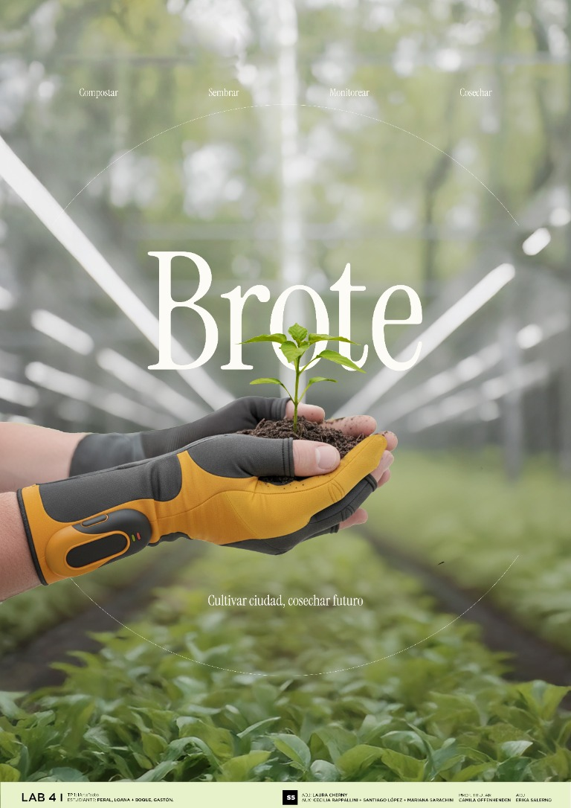
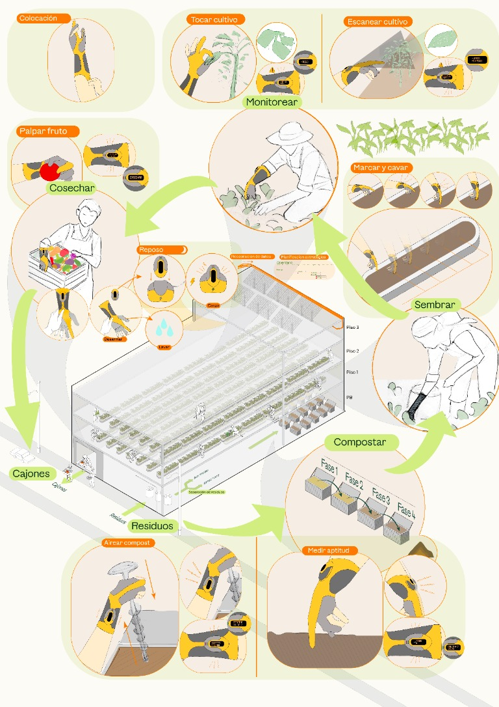
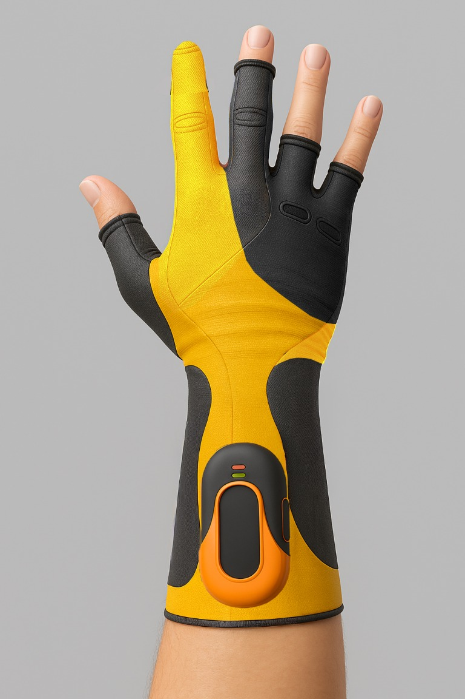
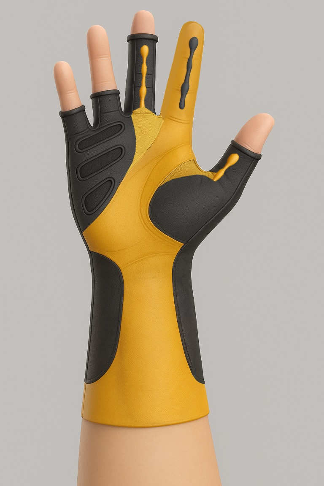

Diseño Especulativo y Producto
Brote
Sobre el proyecto
Un artefacto para el futuro
Un proyecto de diseño especulativo enfocado en un artefacto wearable asistido por inteligencia artificial para facilitar las tareas del agricultor urbano del futuro.
Video
Presentación del proyecto
El proyecto
Uso y desarrollo del guante


